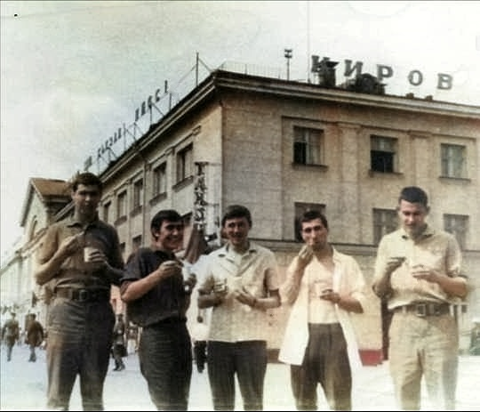
1968-й год. Едем к месту работы. На остановке в городе Кирове.
Справа налево: Саша Долгов, Коля Зенков, Я ( Коля Меншутин ), Толик Кузьмин.
Мы, четверо, прожили вместе в одной комнате в общежитии все пять лет учебы в институте.
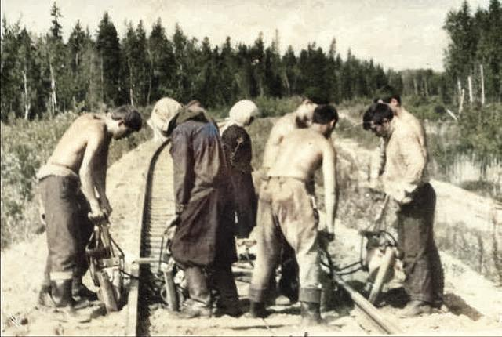
Красноярский край, на строительстве дороги "Ачинск - Абалаково".
Основная наша работа - утрамбовываем щебенку под шпалы подбойками.
Я - крайний слева.
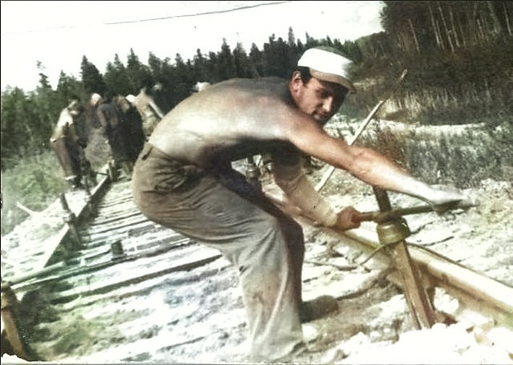
Впереди идут домкратчики, которые поднимают рельсы на заданную высоту.
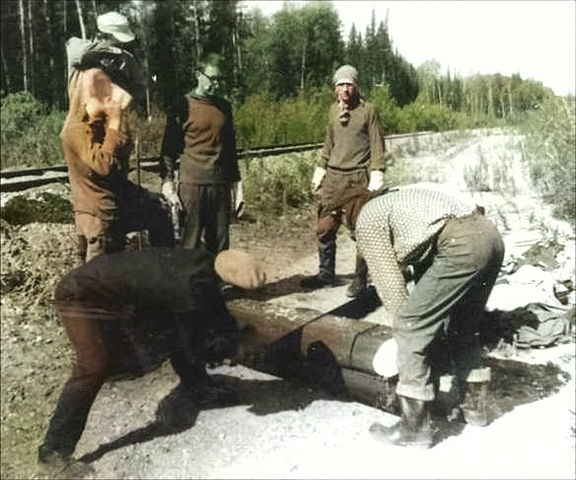
Не помню для чего, пилим шпалу.
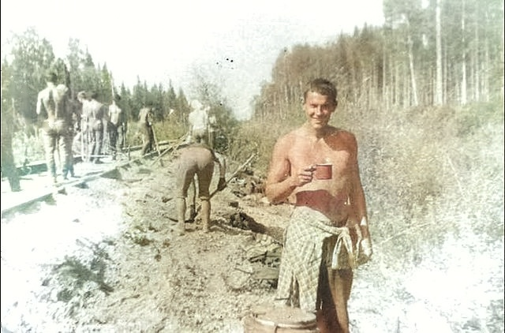
По ходу дела можно и водички попить.
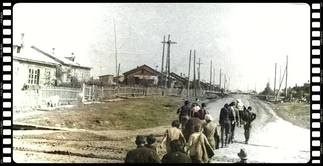
После работы возвращаемся в поселок Рассвет .
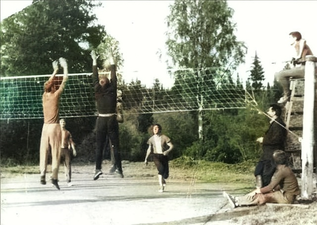
В выходной день можно было и таким образом отдохнуть.
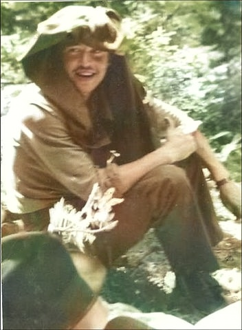
Кто-то меня успел запечатлеть на трассе.
Кстати, в процессе работы нас специально фотографировали,
чтобы в конце каждому вручить альбом с фотографиями на память об этой поездке
( до сих пор храню, с автографами, пожеланиями).
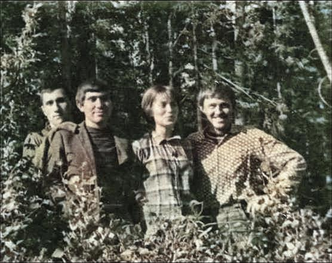
Были и свои "королевы красоты".
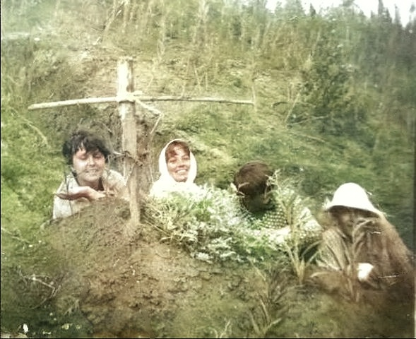
Без шуток тоже не обходилось.
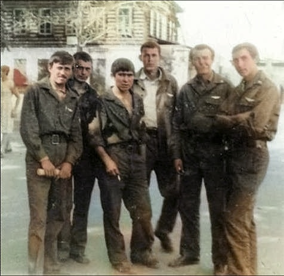
На экскурсии в Ачинске.
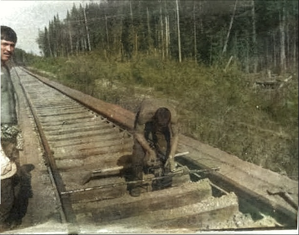
Завершающий этап строительства - проверка колеи на соответствие стандартам.
Потом сдача комиссии и заключительный праздничный ужин.
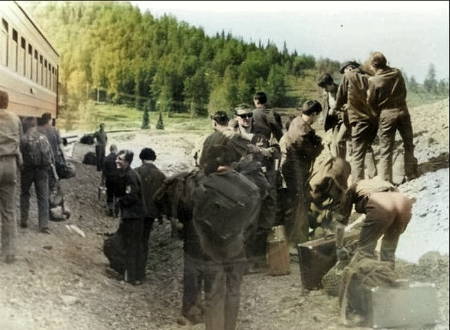
1969-й год. Кемеровская область. Прибытие на место строительства.
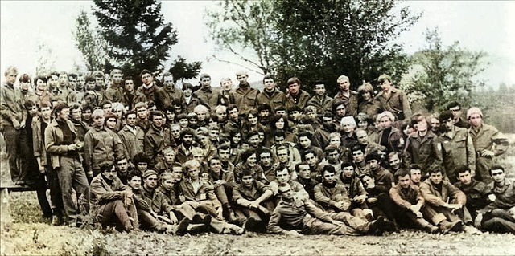
Наш строительный отряд.
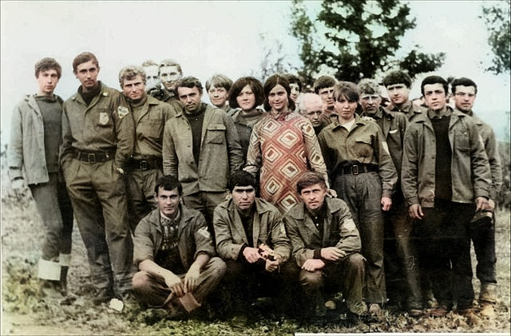
Наша бригада. Я в нижнем ряду крайний справа.
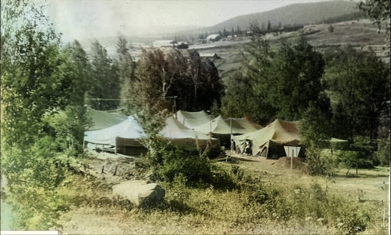
Наш палаточный городок.
Вдали небольшой город Белогорск, куда нам было запрещено ходить,
т.к. там жили в основном семьи ссыльных поселенцев.
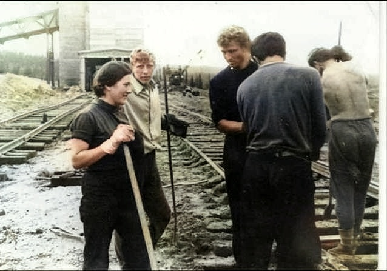
Рабочие будни. Выравниваем шпалы перед засыпкой их щебенкой.
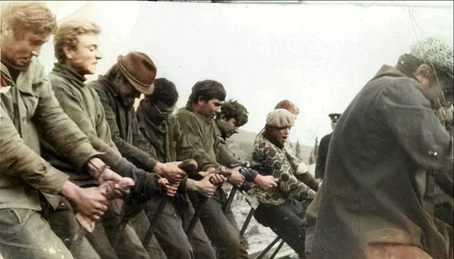
Равняем ж/д дорогу. Я - в шляпе.
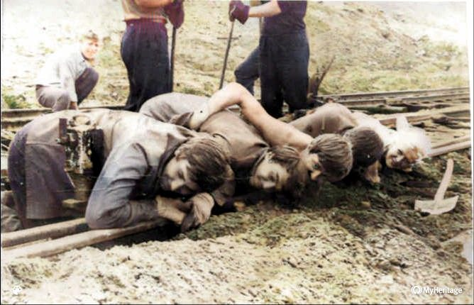
Проверяем свою работу в шутливой форме.
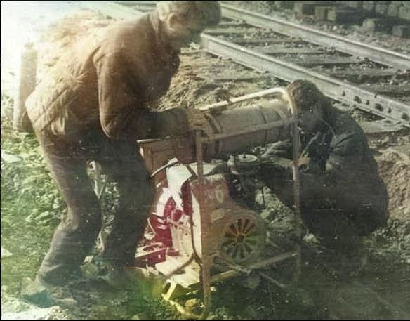
Что-то произошло с генератором. Оказывается я в этом еще и разбирался.
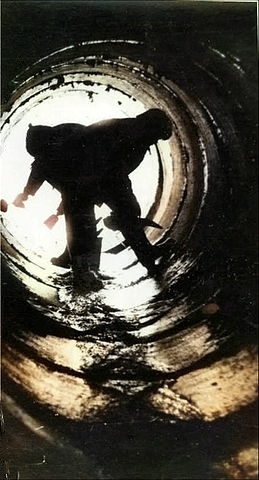
Этим мы тоже занимались.
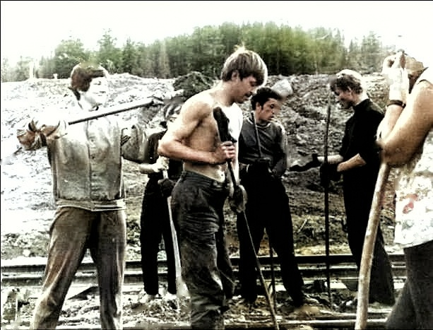
Девчатам скучно. Повеселимся!
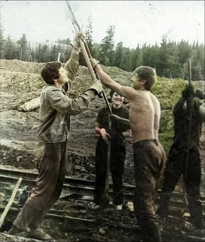
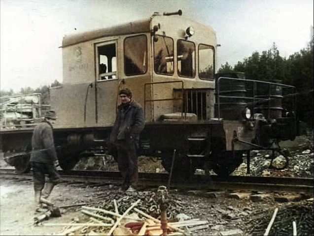
Август. Последние дни работы. Сбор рабочих инструментов.
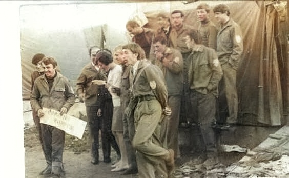
Фотография на память.
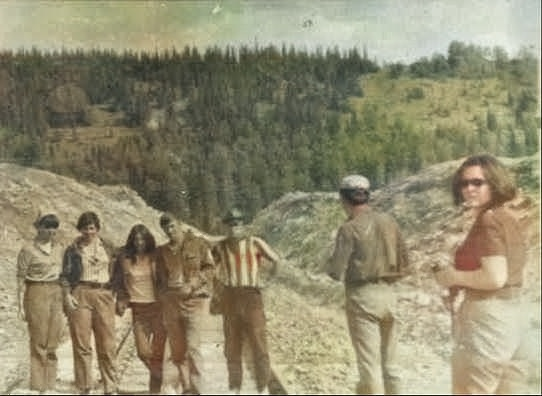
Еще одна фотография на память.
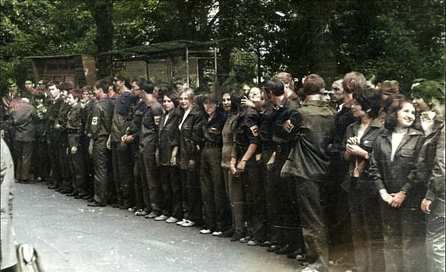
1971 год. Сбор строительного отряда около главного корпуса института перед перед поездкой на вокзал.
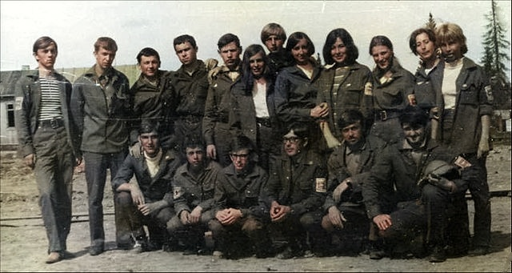
Архангельская область. Моя бригада. Я в нижнем ряду, второй слева.
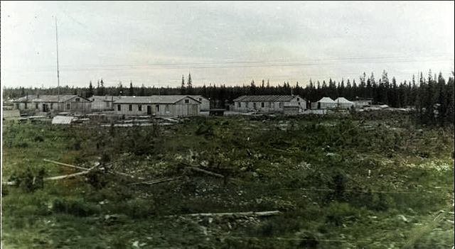
Поселок для строителей, в котором мы жили.
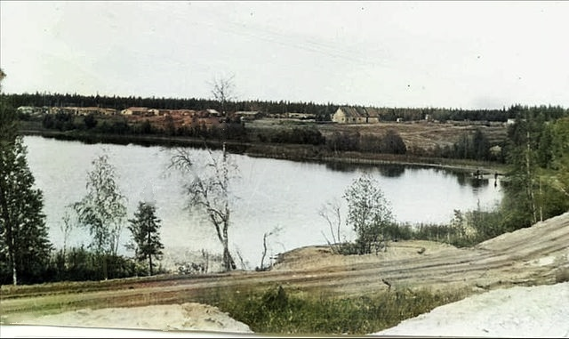
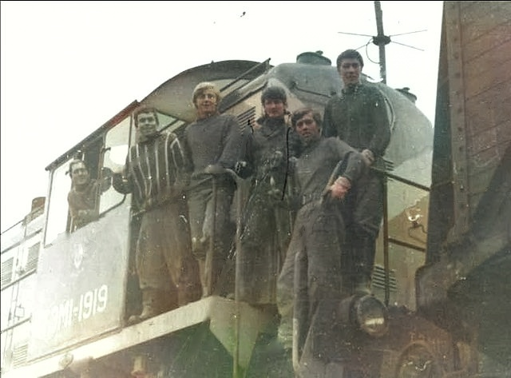
На тепловозе тоже интересно прокатиться.
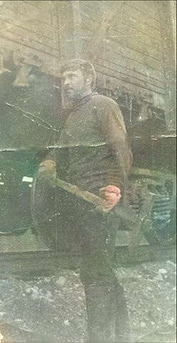
Приходилось по ходу движения состава с щебнем или песком открывать люки,
выбивая защелки кувалдой.
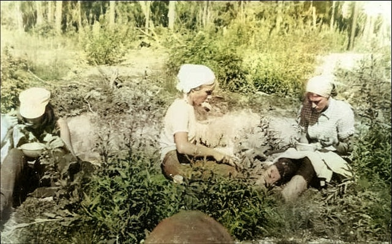
Обед в полевых условиях.
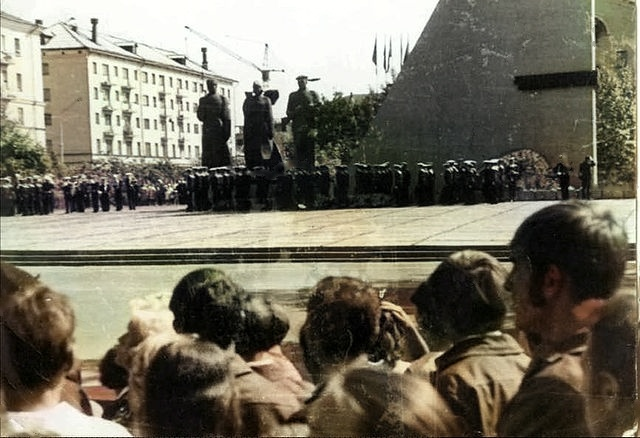
На экскурсии в Архангельске в День военно-морского флота.
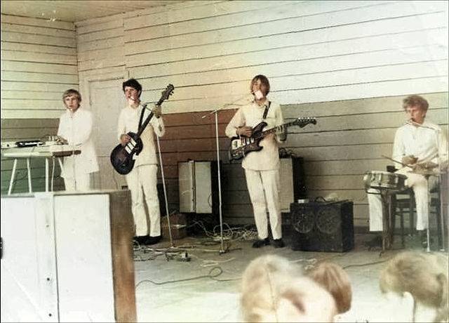
Наш вокально-инструментальный оркестр.
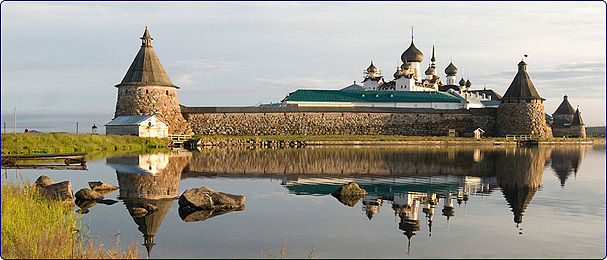
Экскурсия на Соловецкий остров .
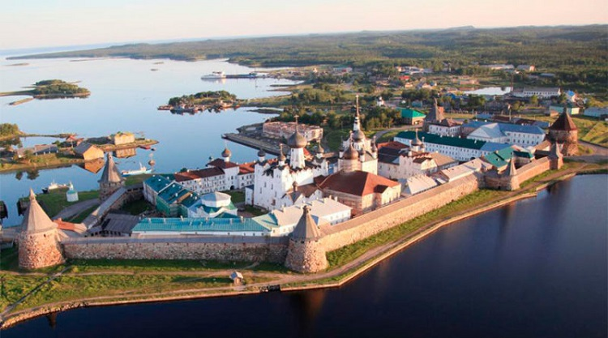
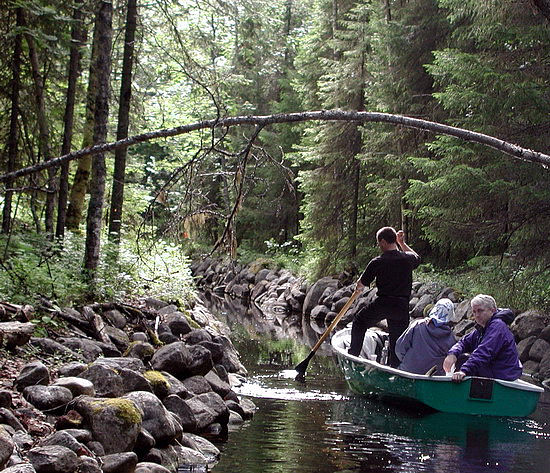
Покатались по каналам острова.
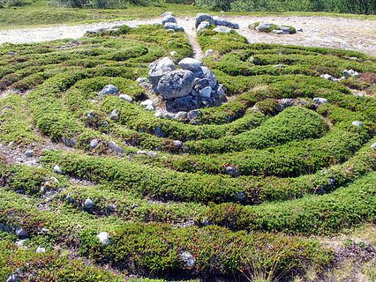
Каменный лабиринт. Похожих лабиринтов на острове несколько.